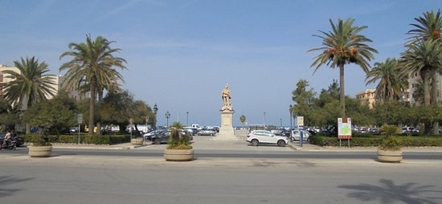

Questa piazza, che fa da raccordo fra l’antica Trapani e quella della modernità ottocentesca, è intitolata a Vittorio Emanuele II, le cui fattezze regali si ritrovano nella scultura del Dupré, del 1882.
Tra le palme e gli eleganti arredi urbani che incorniciano la piazza si trova la Fontana del Tritone – dal posteriore gruppo scultoreo datato agli anni Cinquanta del Li Muli – con la sua vasca, costruita nel 1890 a celebrazione dell’acquedotto “Dammusi”, destinato a rifornire acqua potabile alla città e voluto dall’on. Nunzio Nasi.
Originariamente composta dalla sola grande vasca ottagonale, nel 1951 fu abbellita dallo scultore trapanese Domenico Li Muli con l’inserimento di un gruppo scultoreo di soggetto mitologico, in cemento, formato dalle statue delle Nereidi, Ninfe del mare, e di un Tritone che soffia dentro una grossa buccina per agitare le onde o placarne la furia: posto su un carro a forma di conchiglia, è trainato da due ippocampi, mitiche creature in parte cavalli e in parte pesci, tra mostri marini. Un gioco di luce e acqua, con getti d’acqua che fuoriescono verso l’alto, diventano elementi rappresentativi di vita e rinascita e simbolo del patrimonio culturale trapanese.

